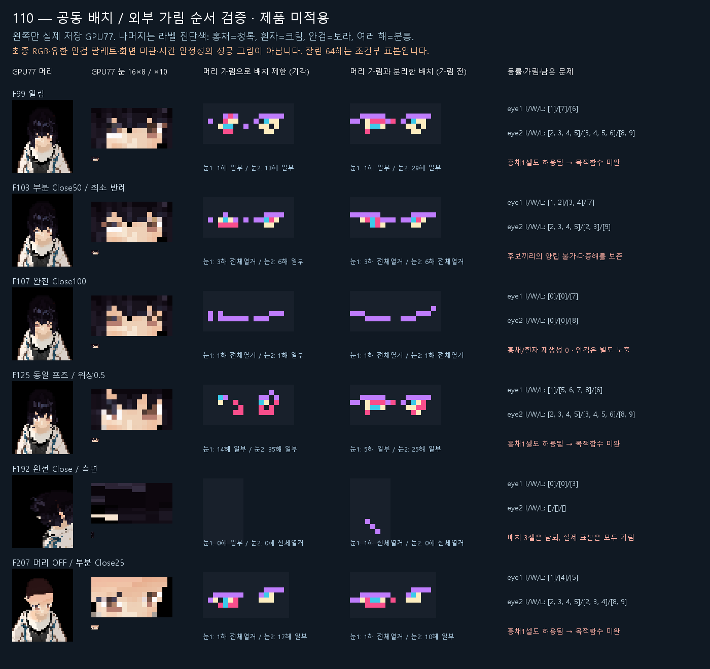
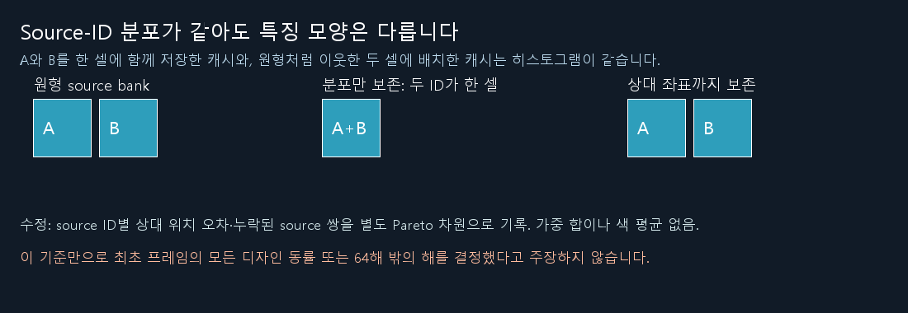

실제 UV 색소 경로 → 현재 carrier의 삼각형 footprint/UV/barycentric/world/depth → 세 파트 공동 라벨 → source ID·상대 배치 → 외부 머리 가림을 연결한 오프라인 후보입니다. 새 Unity/Play/GPU 0회, 제품77 유지. 원본 색/조명/팔레트는 배치 비용에 혼합하지 않았습니다.
검증된 수정은 외부 머리 가림이 눈 원형을 재배치하게 하던 순서의 분리입니다. 머리 ON/OFF/복구에서 배치 후보 집합이 정확히 같고, 최종 노출만 바뀝니다. 측면 Close의 잠재 안검3셀은 기록된 표본에서 전부 가려집니다. source-ID 히스토그램만 같은 것은 같은 모양이 아니어서 source 쌍의 상대 좌표·누락을 별도 Pareto 차원으로 추가했습니다.
미완: 열린 눈 F99/눈1은 같은 기하 최적값에서 홍채1~5셀이 전부 가능합니다. 64개 해만 열거한 상태의 선택은 조건부이며 완전한 Pareto/유일 해가 아닙니다. 새 기준을 미관 성공으로 채택하지 않았습니다. 최종 RGB·유한 안검 팔레트·외곽선·실시간 시간 안정성은 이번 구현의 성공 범위가 아닙니다. 사용자에게 특정 셀 수를 지금 선택해 달라고 요구하지 않습니다.

왼쪽 두 열만 실제 저장 GPU77 색입니다. 오른쪽은 가림 전 배치 계획의 진단색이며 최종 캐릭터 렌더가 아닙니다. 원배율 눈 PNG와 정수 최근접 확대를 함께 표시했습니다.
| 입력 | 108 라벨수 | 경로 누락 | 110 라벨수 | 경로 누락 |
|---|---|---|---|---|
| 105 눈1 | 3 | 51.38% | 7 | 2.49% |
| 105 눈2 | 3 | 73.84% | 8 | 8.13% |
기준은109의 원본 alpha 기반 색소 중심 경로입니다. 작가의 유일한 정답 곡선이 아니며, 외부 머리 가림 전의 polyline과 픽셀 사각형 교차 길이입니다. 얇은 선을 더 넓게 표현한 왜곡을 위 수치로 정당화하지 않습니다.
107 메쉬는 직접 저장본이 아닙니다. 105 Open/Close와107의 현재 head·기록된 Close(누락 시 교정 정점 깊이 추정)를 사용한 가설입니다. 독립54상태 최대 투영0.00158352px/깊이1.963µm, 별도 저장된2프레임 정점 오차 최대1.421µm입니다. 새 방식을 정확한 동일 프레임 메쉬로 부르지 않습니다. 전체 미관측 표면/alpha/래스터 동등성은 미증명입니다.
629개 carrier 셀에서 머리의 앞/뒤 판정이 표본마다 달랐습니다. 35,325개 polygon과30,667개 표본의 다중 깊이를 유지했으며 셀 깊이 하나로 줄이지 않았습니다. 현재0.00158px 크기의 24방향별 유한 perturbation 검사에서는 검사한 최적 라벨 집합이 바뀌지 않았지만, 전체 오차 구간의 불변 증명은 아닙니다.

fields110.build / FaceVisibility.query: 현재 carrier와 표본별 가림. resolver110.solve / feasible: 정확한 유한 minimax/CSP. identity110.rank_with_relative: 원형·상대 배치·동일 현재 비용 내 history. separate110.problem_from_fields / exposure: 외부 가림을 배치에서 분리, 최종 표본 노출 유지.
NumPy/Pillow가 설치된 Python으로 check110.py를 실행할 수 있습니다. 원본107/109 동결 자료는 이 저장소의 sibling 실험 폴더에 연결됩니다. count_range110.py의 quota는 진단용이지 디자인 하드코딩이 아닙니다.